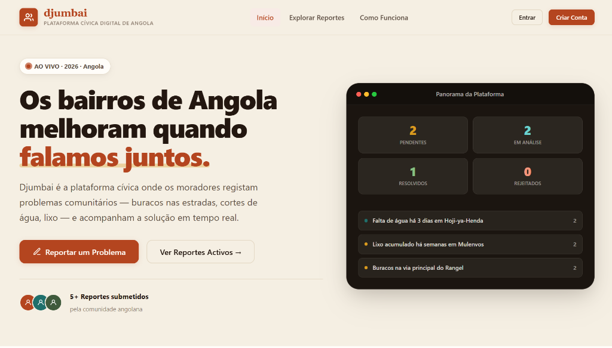

Plataforma onde os moradores angolanos registam problemas comunitários — buracos nas estradas, cortes de água, lixo — e acompanham a resolução em tempo real. "Os bairros de Angola melhoram quando falamos juntos."

Djumbai é uma plataforma cívica digital criada para dar voz aos moradores angolanos. O nome, de origem Bantu, evoca o ato de falar juntos — e é exatamente isso que a plataforma promove: cidadãos que reportam problemas nos seus bairros e acompanham, em tempo real, o estado de cada resolução.
A aplicação apresenta um painel de controlo com métricas ao vivo — reportes pendentes, em análise, resolvidos e rejeitados — permitindo transparência total entre a comunidade e os responsáveis. O design usa uma paleta terra/laranja que evoca calor humano e identidade africana, num layout clean e direto ao ponto.
Moradores submetem ocorrências como buracos, falta de água ou lixo acumulado de forma simples e rápida.
Dashboard com contadores de reportes por estado: Pendente, Em Análise, Resolvido e Rejeitado.
Área dedicada para explorar e filtrar reportes ativos por bairro ou categoria de problema.
Fluxo de entrada e registo de conta com área de perfil do cidadão reportador.
Explora a estrutura, o painel cívico e toda a lógica do Djumbai no repositório oficial.